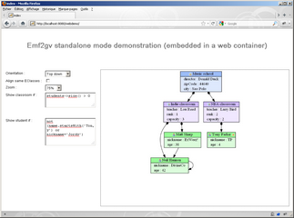

A sample web application has been developped using GWT to illustrate the standalone mode.
It is possible to check out the source from subversion at https://emf2gv.svn.sourceforge.net/svnroot/emf2gv/trunk/org.emftools.samples.school.webdemo.
Simply run the build.xml ANT file which will produce a file named webdemo.war that you will copy to the deploy folder of your J2EE server (tomcat for example).
Here is a screenshot :
